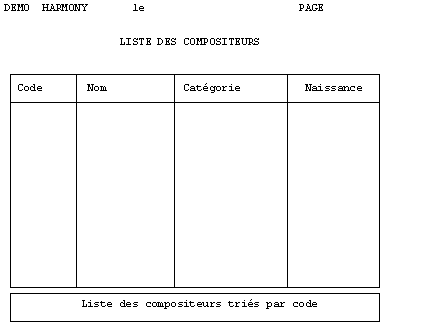

Le bloc de fond est un bloc fixe qui recouvre généralement toute la page à imprimer. Après son impression, il n'y a pas de saut de page et les impressions suivantes s'effectuent à partir du haut de la même page.
Ce type de bloc ne peut pas être utilisé en mode caractères.
Le bloc de fond offre l'avantage de la simplicité : tous les "cadres" sont dessinés dans le même bloc et il suffit d'invalider son impression en cas d'édition sur du papier pré-imprimé.
Mais attention, il présente aussi l'inconvénient de figer la hauteur de page. En effet, un bloc de fond prévu pour une page de 66 lignes devra être redessiné si la hauteur de page passe à 62 ou 70 lignes.
Les blocs de fond ne sont donc utilisables que si la taille de la page papier est connue à l'avance et si le nombre de lignes imprimées par page est constant.
Dans l'exemple d'état précédent, on aurait pu utiliser un bloc de fond pour tracer tous les cadres :
